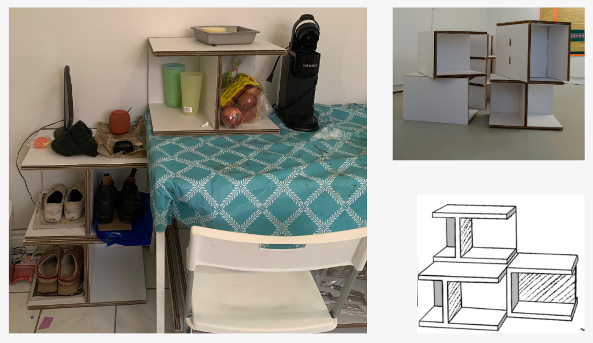
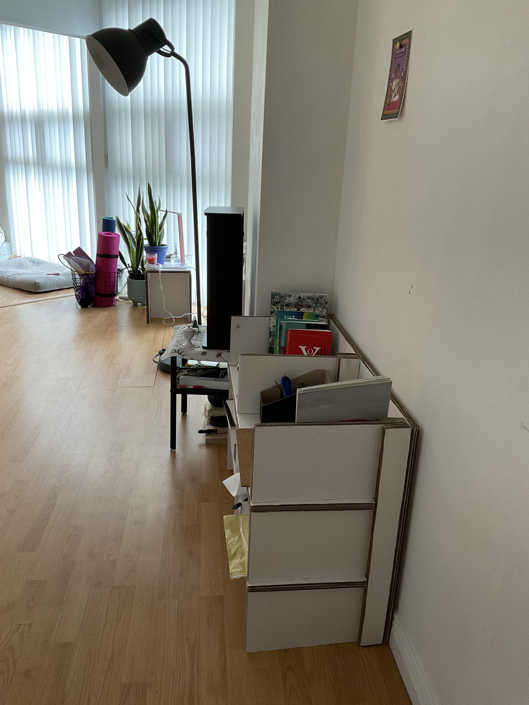
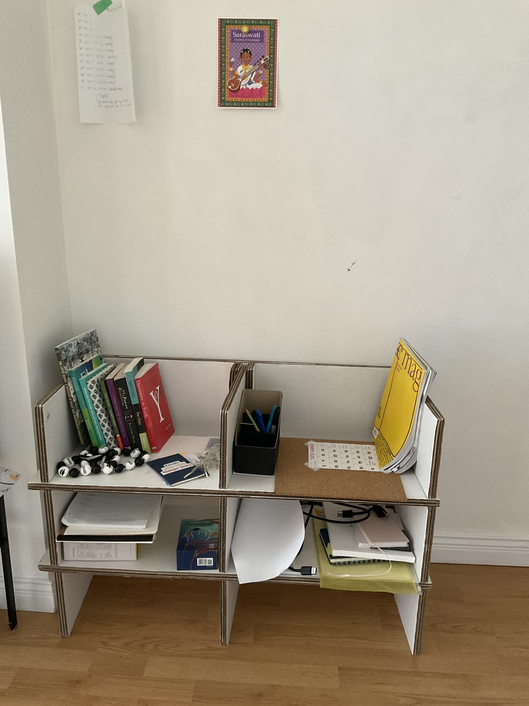

Revealing Footprints
“Revealing Footprints” is a visual dialogue on the aftermath of rapid development, drawing from my experiences in a swiftly evolving country like India. Using waste as a symbolic medium, the white spray paint represents the whitewashing of environmental concerns in our consumer-driven society.
The garbage used in the piece was collected from the recycling bin of a three-person household, representing one week's worth of waste. The partial revelation of original product labels signifies the cracks within systems that overlook the environmental and health costs of consumption.
This work challenges the prevalent “out of sight, out of mind” attitude toward landfills, urging viewers to confront the true impact of a consumer-centric lifestyle. Beyond local concerns, it speaks to the global interconnections of environmental challenges.
Ultimately, “Revealing Footprints” is not just a call for awareness but a personal plea to reconsider our role in this narrative — emphasizing the shared responsibility we all hold for a more sustainable future.



